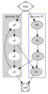
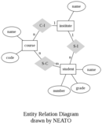
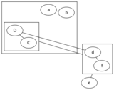
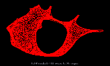
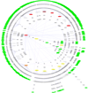
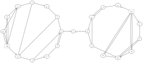

About
Graph Visualization
Graph visualization is a way of representing structural information as diagrams of abstract graphs and networks. Automatic graph drawing has many important applications in software engineering, database and web design, networking, and in visual interfaces for many other domains.
Graphviz is open source graph visualization software. It has several main graph layout programs. See the gallery for some sample layouts. It also has web and interactive graphical interfaces, and auxiliary tools, libraries, and language bindings.
The Mac OS X edition of Graphviz, by Glen Low, won two 2004 Apple Design Awards.
The Graphviz layout programs take descriptions of graphs in a simple text language, and make diagrams in several useful formats such as images and SVG for web pages, Postscript for inclusion in PDF or other documents; or display in an interactive graph browser. (Graphviz also supports GXL, an XML dialect.)
Graphviz has many useful features for concrete diagrams, such as options for colors, fonts, tabular node layouts, line styles, hyperlinks, and custom shapes.
In practice, graphs are usually generated from an external data sources, but they can also be created and edited manually, either as raw text files or within a graphical editor. (Graphviz was not intended to be a Visio replacement, so it is probably frustrating to try to use it that way.)
Roadmap
- dot - makes ``hierarchical’’ or layered drawings of directed graphs. The layout algorithm aims edges in the same direction (top to bottom, or left to right) and then attempts to avoid edge crossings and reduce edge length.

- neato - ``spring model’’ layouts. This is the default tool to use if the graph is not too large (about 100 nodes) and you don’t know anything else about it. Neato attempts to minimize a global energy function, which is equivalent to statistical multi-dimensional scaling. The solution is achieved using stress majorization, though the older Kamada-Kawai algorithm, using steepest descent, is also available.

- fdp - ``spring model’’ layouts similar to those of neato, but does this by reducing forces rather than working with energy. Fdp implements the Fruchterman-Reingold heuristic including a multigrid solver that handles larger graphs and clustered undirected graphs.

- sfdp - multiscale version of fdp for the layout of large graphs.

- twopi - radial layouts, after Graham Wills 97. Nodes are placed on concentric circles depending their distance from a given root node. You can set the root node, or let twopi do it.

- circo - circular layout, after Six and Tollis 99, Kauffman and Wiese 02. This is suitable for certain diagrams of multiple cyclic structures, such as certain telecommunications networks.

Viewers
- dotty - a vintage customizable Unix/X windows viewer that has subsequently been ported to Microsoft Windows.
- tcldot - a TCL/TK scripting language extension for Graphviz
- Webdot - a tcldot scripted WWW service for graphs in HTML documents.
- There is also a simplified version written in perl.
- Grappa - a Java package for graphs with full Java graph data structures
- ZGRViewer - an SVG-based zooming graph viewer for large graphs.
- Mac OS X graphviz
- viz.js - graphviz built with emscripten for use on the web and in node.js
Filters
- gvpr is a general-purpose graph stream editor, in the spirit of awk, sed (or think of perl if you don’t know those).
Example applications
- Software documentation: Pretty diagrams automatically generated by doxygen and dot.
- WWW Graph Server: For a WWW application of Graphviz, please see Webdot.
- Google Charts Graphviz API.
- Canviz, an HTML5 canvas Javascript library.